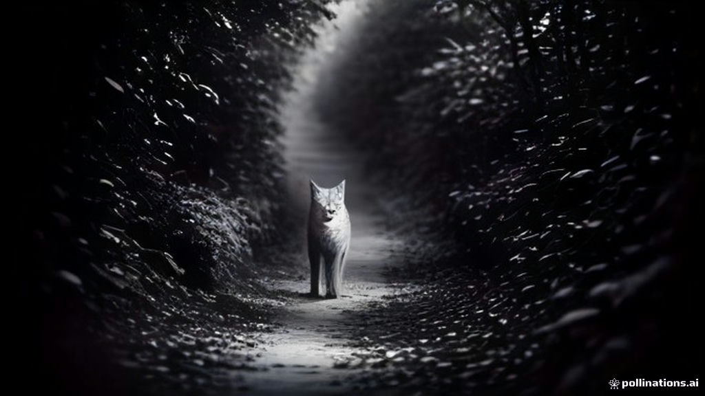
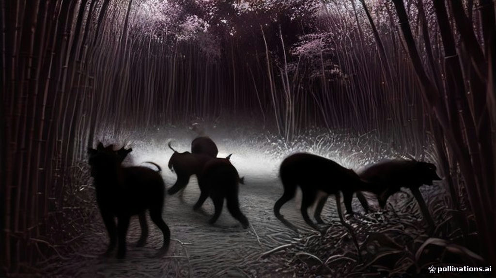
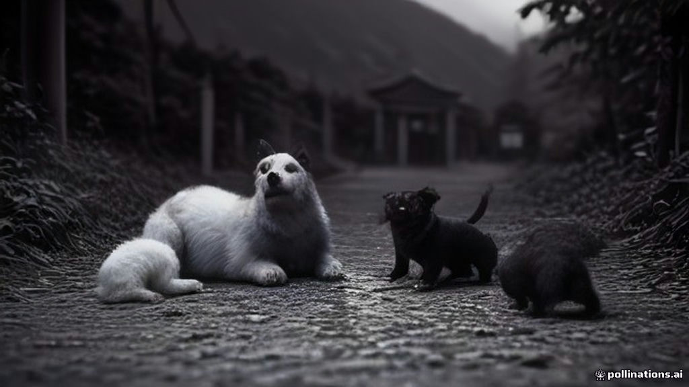
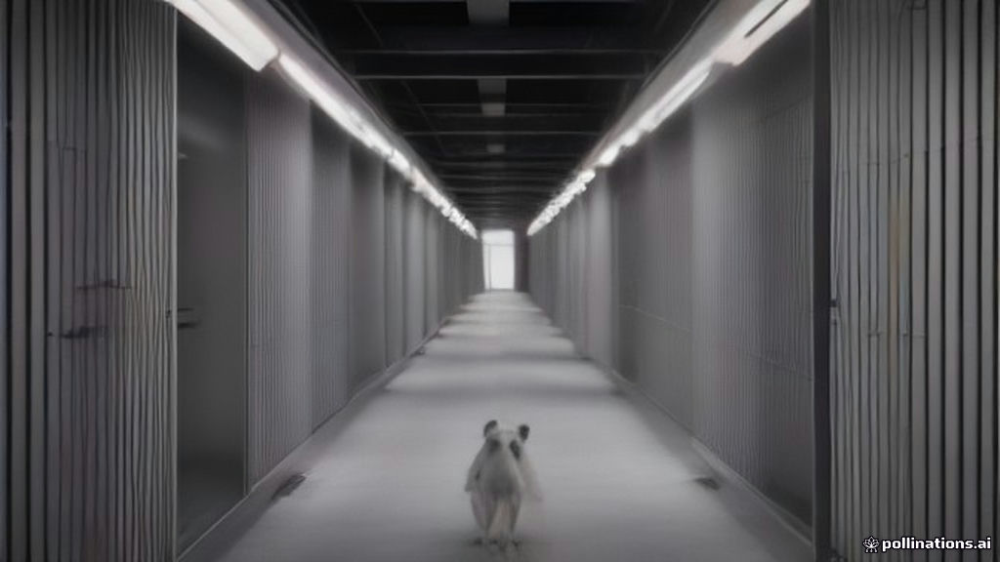

研究團隊追蹤的 55 隻石虎，已經死了 33 隻。其中 14 隻，是被狗咬死的。順著這些狗往回追，會追到收容所、追到政策，最後追到我們自己。
圖：AI 生成示意圖（Pollinations / FLUX），非真實拍攝

石虎是台灣唯一僅存的原生貓科動物，被列為第一級瀕臨絕種保育類。農業部生物多樣性研究所從 2019 年起，替救傷後野放的石虎戴上發報器，一隻一隻追蹤牠們的下落。
這是被追蹤的 55 隻石虎。
到 2026 年 4 月，33 隻已經死亡，只剩 22 隻還活著。
死因包括路殺、獸鋏、毒餌、殺鼠劑。但比例最高的單一死因是狗：14 隻死於犬隻或疑似犬隻攻擊，佔死亡的 42%。
研究者提醒，狗咬多發生在不易被發現的地方，實際數字可能更高。
石虎只是其中一種。把鏡頭拉遠，看全台野生動物急救站 33 年的紀錄：
425 隻野生動物因為被狗攻擊而送救傷，這還不包括送醫前就死掉的。
被狗咬傷最多的是穿山甲，228 隻，超過一半。接著是山羌 51 隻、白鼻心 25 隻。
再依時間切開。1993 到 2017 年的 25 年間是 141 隻，2018 年之後的 8 年就有 284 隻。
平均每年從 5.6 隻跳到 35.5 隻，多了六倍。
2017 年，是一條反覆出現的分界線。把石虎的死亡通報，和全國遊蕩犬的推估數放在同一條時間軸上。
農業部的全國遊蕩犬調查，從 2018 年的 146,773 隻，一路漲到 2022 年的 159,697 隻。
同一段時間，石虎每年被通報路殺 17 到 31 隻。2022 年還有 4 隻確認死於犬殺。
遊蕩犬數量在 2022 年到頂，石虎路殺也在 2019、2022 年兩度達到 31 隻的紀錄。
這兩條線不能證明誰造成誰，但林務單位分析全台 183 個長期監測樣點，77.6% 拍到了狗，而且 2017 年後顯著上升；石虎的分布範圍，和狗百分之百重疊。
2024 年，遊蕩犬第一次下降到 141,584 隻。不過農業部說，降幅還沒有達到統計上的顯著。
那麼，2018 到 2022 年，狗為什麼變多？

目前沒有一份研究能把遊蕩犬增加的原因一次說清楚。下面是政府統計、動保團體的長期資料和學術調查各自指向的因素，強度不一，我們一一標出來源類型。
2017 年零撲殺上路。收容所不再因為「期滿」而安樂死動物，原本最大的出口關上了。
修法緩衝期間，收容所也開始控管入所量，2016 年的收容數比 2015 年少了 19%。
街上的狗從哪裡來？相信動物協會分析北北基 2,705 隻遊蕩母犬：近一半是在街頭出生的，三分之一是有主人但放養在外的狗，真正被棄養或走失的只有一成多。
苗栗縣 2025 年推估有 7,403 隻遊蕩犬，是 2021 年的 2.5 倍。縣府動防所認為，最大原因是熱區長期餵食卻沒有絕育，讓狗群聚、繁殖。
要讓一個區域的狗自然減少，絕育率通常要拉到八成以上。家犬的絕育率到 2025 年是 71.75%。
高雄壽山的研究算過：即使維持 85% 絕育率，也要 17 年族群才會消失；只要每年有 50 隻新狗移入，就會失敗。
罰則存在，但很少落實。未絕育的檢舉 2,926 件，裁罰 307 件，約一成。苗栗三年來棄養只開罰 10 件。

零撲殺拿掉了收容所的出口，籠舍卻沒有跟著增加。狗待得越來越久，一格一格被填滿。
2015 年修法前，進入公立收容所的狗只有十二天。公告期一過、無人認領，就可能被安樂死。
2015 年，全國政府收容所收容了 79,251 隻動物。
落日條款期間，收容所開始控管入所。2016 年降到 64,276 隻，少了 19%。
2017 年起，期滿撲殺的天數歸零。
全國收容所的犬隻可留容上限是 9,481 隻。2026 年 1 月底，已經用掉 76%，有三個縣超過 100%。
停止撲殺後，有的犬貓在收容所一住就是上千天。領養率在 2017 年後下滑，有的收容所一籠關好幾隻狗、天天打架，有的縣市被迫把狗送進管理不佳的私人狗園。
2017 年 5 月，桃園新屋收容所獸醫師簡稚澄離世，讓社會第一次正視第一線人員背負的重量。
各縣市公立收容所的犬隻在養數，佔可留容上限的比例。全國平均 76%，雲林、彰化、南投超過 100%，台南、澎湖、桃園也逼近滿載。
資料：農業部〈115 年 1 月全國公立動物收容所收容處理情形統計表〉。可留容上限多以大型犬體型估算，各地欄舍可彈性調整。當月全國入所 4,093 隻，其中 1,629 隻是「絕育後回置」計畫的短暫入所。
二十多年來，台灣處理流浪動物大致走過三個階段：捕捉後安樂死、以絕育取代撲殺、再到今天的「源頭減量」。每一次轉向都由社會壓力推動，而配套往往晚了好幾年。
收容動物公告期滿無人認領，即可人道處理。
片名來自收容所的十二天公告期，許多人第一次看見收容所內部。
設兩年落日條款，讓收容所準備。
出口關上了，但收容空間、絕育量能與飼主管理沒有同步到位。
落差：2018–2022 年遊蕩犬推估數連漲三次
第一線人員的負荷成為公共議題。
急救站的犬攻擊救傷，8 年 284 隻，是前 25 年的兩倍。「野保與動保」的衝突浮上檯面。
零撲殺上路近六年後，中央正式檢討遊蕩犬管理策略。
農業部要求地方鎖定熱區，短時間內把絕育率拉高。
家貓須登記並植入晶片，2026 年起開罰。
我們的愛心，
是不是害死了石虎？
餵狗的人多半出於善意。但一碗沒有配套的飼料，會讓狗活得更久、生得更多，聚成狗群。當這群狗住在淺山，石虎、穿山甲、山羌就在牠們的活動範圍裡。
這不代表不該愛牠們。2024 年遊蕩犬第一次減少，新北市在高強度絕育下七年少了 48% 的戶外犬，說明方法是存在的。差別在於，愛心有沒有跟著責任一起來。
在餵的狗貓，請配合當地的絕育計畫。不在山區、保育區或石虎棲地餵食。
三分之一的遊蕩母犬是有主人的放養犬。牽繩、圈養、絕育。
貓狗都要植入晶片並登記。走失時找得回來，棄養時追得到責任。
無法繼續飼養時，透過送養平台或收容所轉介，不把動物丟在路邊或山上。